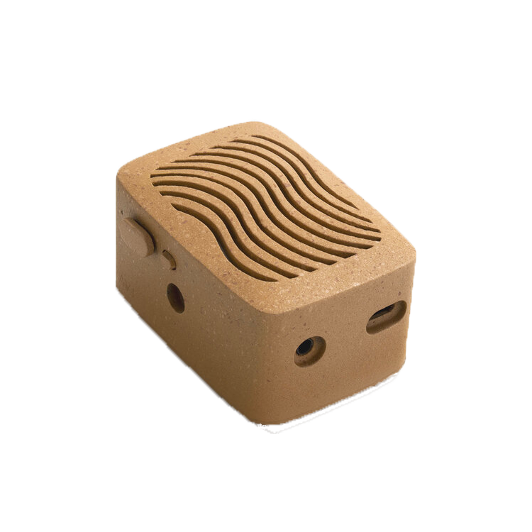
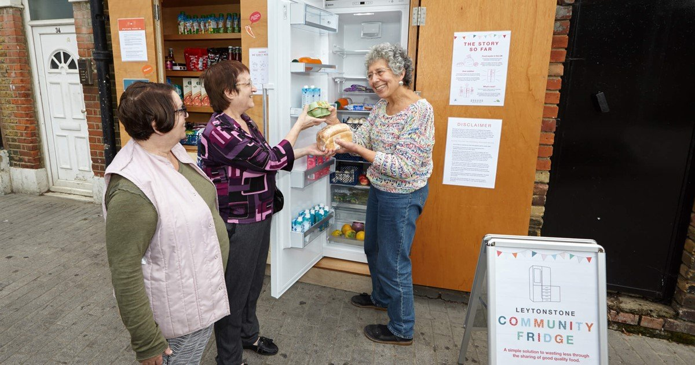
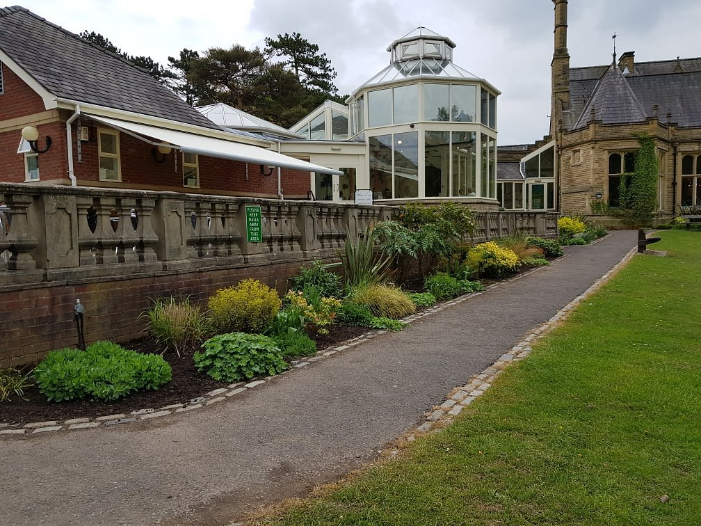
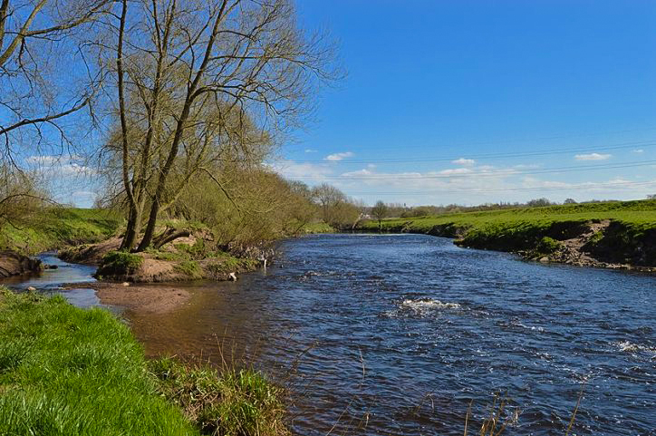

Have you ever wondered how to make music from plants or where the community fridges are in stockport?
This website will tell you all about them.
Plants can make their own music, this is thanks to a device called the PlantWave
You can visit the official website using the link below
A Community Fridge is a social space that brings people together to eat, connect, learn new skills and reduce food waste.
Hubbub coordinates the world's largest Community Fridge Network with 250 Community Fridges running across the UK.
There are lots of green spaces in stockport, such as:
Bruntwood Park-Rating: 4.5/5 stars
Mersey vale nature park- Rating: 4/5 stars
Want to get in contact? Click the link below.